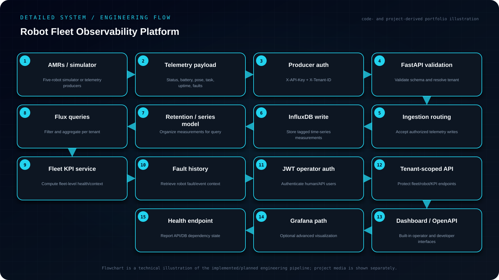

AI-GENERATED VISUALIZATION • HD
AI-GENERATED VISUALIZATION • HDIndependent Engineering Project · Public release Sep 2026
Robot Fleet Observability Platform
Built a tenant-aware AMR monitoring backend with time-series telemetry, fleet KPIs, fault history, secured ingestion and a five-robot simulator.
Objective
Build a tenant-aware robot fleet observability platform that securely ingests AMR telemetry, stores time-series data in InfluxDB, computes fleet KPIs/fault context and presents operator-facing views through FastAPI, OpenAPI, dashboard and Grafana interfaces.
- Ingest status, battery, odometry, task, uptime and fault telemetry from simulated or real AMRs.
- Separate producer authentication from operator JWT access and keep data tenant-scoped.
- Use InfluxDB/Flux for time-series persistence, aggregation and fleet-level views.
- Expose health, KPIs and fault history through APIs plus operator/dashboard visualization and explicit degraded-health reporting.
Engineering Challenge
Operations teams need fleet-level visibility rather than separate robot logs. The service therefore has to authenticate operators, isolate tenant data, ingest robot telemetry safely and turn time-series measurements into useful fleet-level health and fault views.
Implementation
Built a FastAPI service with JWT operator authentication and separate API-key protection for telemetry producers. Robot status, battery, odometry, task, uptime and fault measurements are written to InfluxDB 2.x and queried through tenant-scoped Flux expressions. The project includes a browser dashboard, OpenAPI endpoints, an importable Grafana definition and a simulator that continuously publishes five AMRs.
System Architecture
AMRs / five-robot simulator → X-API-Key + X-Tenant-ID ingestion → FastAPI → InfluxDB time-series storage → tenant-scoped fleet API → built-in operator dashboard / OpenAPI clients / optional Grafana dashboard.
Detailed Engineering Flow
Project-specific architecture and execution flow reconstructed from the implementation, project files and documented engineering workflow.

Validation & Test Strategy
The documented end-to-end procedure checks API/database health, authentication, protected fleet queries, HTTP 401 behavior, direct telemetry ingestion and browser-dashboard population. The health endpoint distinguishes a running API from a degraded database connection.
Engineering Decisions & Boundaries
The project deliberately keeps user and tenant registration in process memory and calls that out as a development boundary rather than pretending it is production-ready. The documentation identifies the next production steps: persistent identity storage, separate revocable producer credentials, token rotation, rate limiting, audit events and backups.
Project Access
Public repository with implementation and documentation.
OPEN GITHUB REPOSITORY